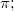

Letztes Update: 04.02.2015
Beim Definieren einer Funktion mit Origin C müssen Sie die Syntax der C-Sprache verwenden. Beachten Sie, dass bei C Groß-/Kleinschreibung berücksichtigt wird. Daher müssen Ihre Eingaben im Bearbeitungsfeld Parameternamen dem entsprechen, was im Listenfeld Funktion eingegeben wurde.
Wenn Ihr Parametername z.B. P1 ist, können Sie p1 nicht in Ihrem Funktionscode verwenden. Darüber hinaus werden die meisten mathematischen Funktionen in Origin C klein geschrieben, d.h., das Kompilieren der Funktion Sin() schlägt fehl, stattdessen sollte sin() verwendet werden. pi, Pi, PI sind jedoch alle , da sie alle vordefiniert sind.
Allgemeine Informationen zum Erstellen und Kompilieren einer benutzerdefinierten Anpassungsfunktion mit Hilfe von Origin C finden Sie auf der folgenden Seite der Origin-Hilfe:
Anwenderdefinierte Anpassungsfunktion mit Hilfe von Origin C
Schlüsselwörter:anwenderdefiniert, benutzerdefiniert, Ausdruck, Gleichung, Origin C